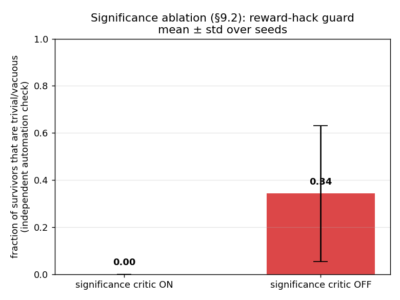
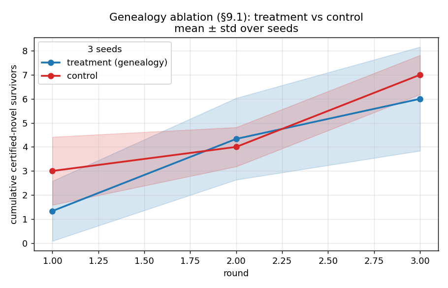

Prototype · v0.1-pitch
A minimal but real, end-to-end machine that creates certified-novel knowledge by bold conjecture → severe automated criticism → retention of survivors and the reasoned genealogy of failures — not by predicting the human-text distribution.
A frozen LLM is demoted from a terminal objective to a proposal distribution; the primary signal becomes survival under a real Refutation Engine. What sets it apart from RLVR / AlphaProof / Absolute Zero: it conditions the proposer on a structured genealogy of why conjectures failed, and scores them by hard-to-vary-ness — not mere pass/fail or validity.


The replay viewer reads a committed, sanitized copy of a real run ledger and renders the loop round-by-round: each conjecture as a card coloured by its refutation class, with significance mini-bars (novelty · breadth · hardness), a certified-novel badge, and — under each survivor — the failed siblings the genealogy explains. No API, no network, no Lean: it’s a faithful replay of what actually ran.
Honest limits: frozen proposer (in-context conditioning only);
operational, not formal, novelty; small scale (~18 conjectures). The headline rests on
the real sandboxed code-exec critic; the Lean 4 / mathlib critic is wired and compiles but
produced 0 survivors at the demo budget. Reproduce locally with make demo.